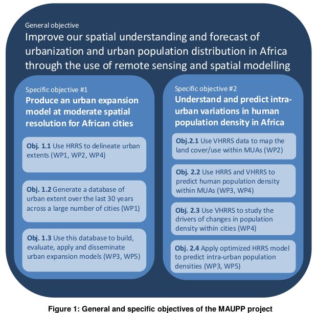

We have highlighted in the review of the state of knowledge that there are two limitations in the existing population distribution datasets that are related to urban areas: (i) the lack of urban expansion forecasts and (ii) the homogenous distribution of people within cities. Both limitations can be significantly improved with advanced remote sensing data and techniques. The general objective of the MAUPP project is therefore to improve our spatial understanding and forecast of urbanization and urban population distribution in Africa through the use of remote sensing and spatial modelling.

This general objective is shown in Figure 1, along with its subdivision in specific objectives.
In the first objective (Obj. 1.1), high resolution remote sensing (HRRS) data (i.e. spatial resolutions between 20 and 30 m) will be used to delineate urban extents of a set of African cities. The accuracy of the obtained urban extents will be evaluated and improved using available contextual information. Methods will combine archived SAR and optical data in order to increase global information and complementarity of the two datasets. As shown in the state of knowledge review, existing urban expansion models for Africa suffer from a lack of urban data for training and calibrating models. The best method identified in Obj. 1.1. will therefore be automatized to generate a database of land cover changes over the last 30 years across a large number of cities in Africa (Obj. 1.2). This database will be used to build urban expansion models and to evaluate their forecasting accuracy. Moreover, analysis of these temporal changes will allow to forecast the distribution of the major urban extents in Africa in 2020 and 2030 (Obj. 1.3). Because historical data on geographical determinants of urban growth (e.g. roads, markets, central business district) will help to understand the evolution of the urban spatial patterns, for Obj. 1.3, very high resolution remote sensing (VHRRS) will also be used at different steps to optimize the models, assess their accuracy and validate the applied methods.
In the second specific objective, the role of remote sensing data will mainly be to delineate residential land use zones within cities using VHRRS data (Obj. 2.1) in order to identify, characterize and predict intra-urban variations in population density. HRRS and VHRRS data will then be combined in order to develop predictive models of intra-urban population density (Obj. 2.2). The accuracy and limitations of methods based on HRRS data will be compared and optimized using VHRRS data. This analysis also aims to evaluate the added value of VHRRS data compared to HRRS data by answering the two following questions: (i) what physical factors controlling human population density can be detected with VHRRS data but were not taken into account with HRRS data only? and (ii) can these physical attributes be detected on HR images? Similarly, the complementarity of VHRRS data compared to publicly available datasets such as Google Earth (GE) or OpenStreetMap (OSM) will be evaluated. Other objective addresses the analysis and the understanding of the drivers behind the changes in human population density within cities using VHRRS data (Obj. 2.3). Factors related to the socio-economic level of residential populations or the historical evolution of cities will be explored in order to evaluate their impact on the past, present and future population density of city neighbourhoods.
Finally, the best method for predicting intra-urban population densities based on HRRS data will be used to generate a database of human population density within urban extents across a large number of cities in Africa (Obj. 2.4).
In addition to its own set of objectives, the project aims to contribute to the AfriPop/WorldPop project (www.worldpop.org.uk), which should ensure a rapid dissemination of outputs. Results from specific objectives #1 and #2 will be integrated into 100 m resolution population distribution datasets developed by the AfriPop project.